FORUM DES ASSOCIATIONS ET SAISON 2017/2018
Bonjour les amis, le forum approche à grands pas, dimanche 10 septembre au gymnase d'Artagnan. Les coups de mains sont les bienvenus, ou juste un coucou si vous passez dans le coin. Notre démonstration est prévue entre 14h30 et 15h15.
!! Les cours commencent dès mardi 12 septembre en salle de dojo. À bientôt la team !!
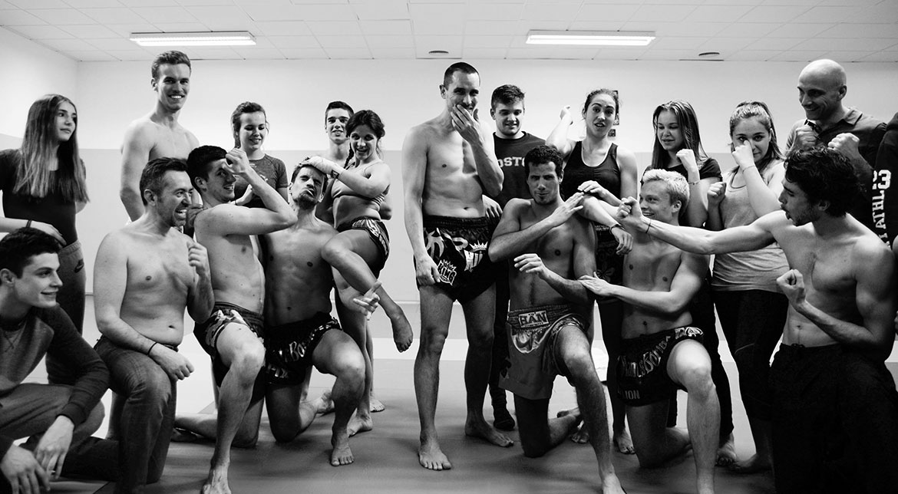
Repas du Club
Réservez votre soirée du samedi 4 février pour le dîner du club. On vous tiendra au courant de l'heure et du lieu (N'hésitez pas si vous avez des idées de resto) et pensez à prévenir François et Mélanie pour la réservation
Trophée National 2016
Armel et Antoine sont tous les 2 vainqueurs du Trophée National. Armel après avoir battu son 1er adversaire par jet de l'éponge après avoir fait compter son adversaire sur un super coup de genou visage, et sa finale par abandon sur blessure genou. Antoine après un combat très physique, sans laisser son adversaire respirer, gagne à la décision!
Félicitations à eux !
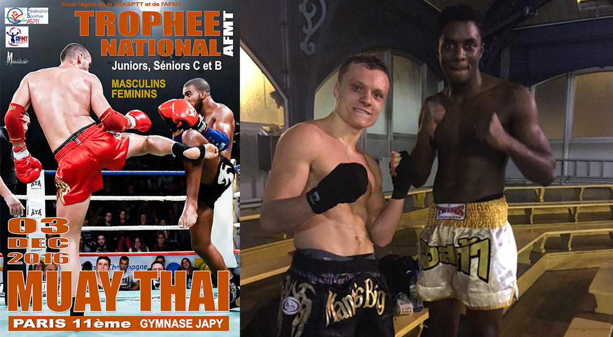
Félicitations aux 5 !!!
Phil, Romain, Pix, Titix et Antoine ont obtenu avec succès leurs BMF1 (Brevet de Moniteur Fédéral)
Ils peuvent maintenant assister les cours enfants et adultes aux côtés de François et Mélanie
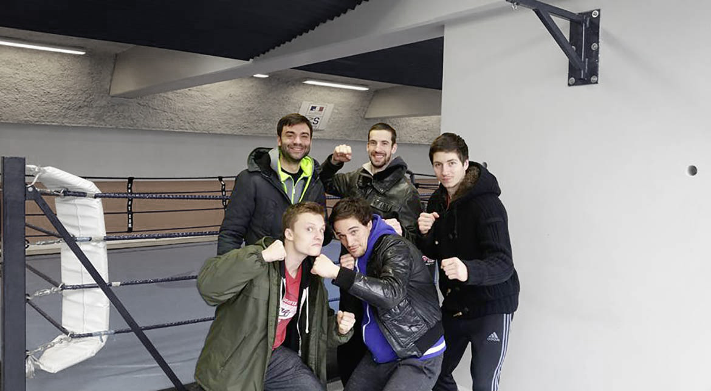
Repas du club !!!
RDV à 18h30 samedi 30 janvier au Speed Park de Conflans pour un Bowling ou autre
Adresse : ZA des Boutries, 18 Rue de l'Hautil, 78700 Conflans-Sainte-Honorine
--> 20h au restaurant japonnais Hoki Sushi à deux pas du Speed Park
Confirmez votre présence auprès de Mel ou François :-)
Journée découverte des sports de contacts et disciplines associées
Venez Participer à cette journée découverte le dimanche 13 décembre dans notre dojo
13h30 à 15h30 pour les enfants
15h30 à 18h30 pour les adultes
Les intervants sont : François Moreau en boxe Boji, Benjamin Sebire en boxe Thaï et Elijah Bokelli en Pancrace
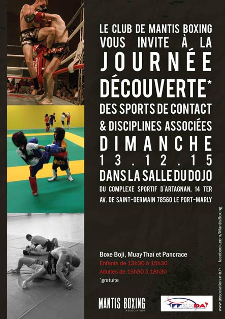
Tournoi Muay Thaï de Paris
Dimanche 29 Novembre 2015
Gymnase JAPY : 2, rue Japy 75011 Paris.
Pesée prévue de 10h à 11h et début de la compétition 13h30-14h00
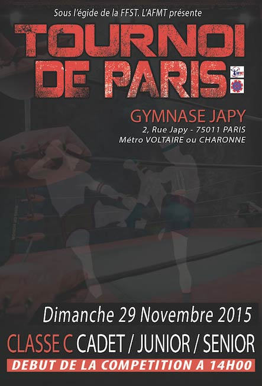
Découvrez les dernières photos et vidéos ajoutées
De la saison 2014/2015, du forum des associations 2015 et des derniers combats d'Antoine
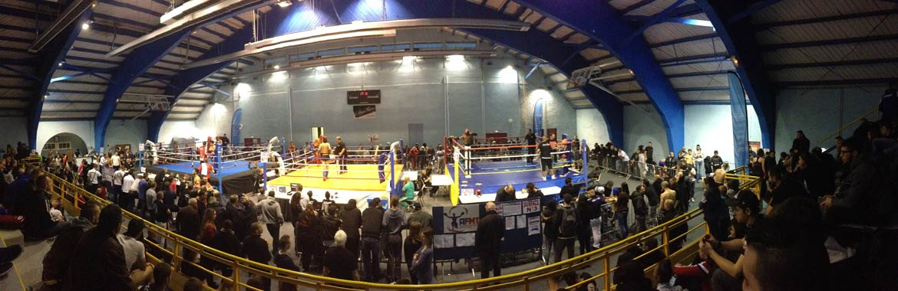
BIGA MUAY THAI CLUB le 14 novembre 2015
Venez nombreux pour les 10 ans du BMTC, soutenir Benjamin en class B et Mikael en class A, du club d'Andrésy.
Vous pouvez réserver pour 10 euros la place en gradin en prévente, en contactant le 06.85.98.49.43 au lieu de 15 euros sur place
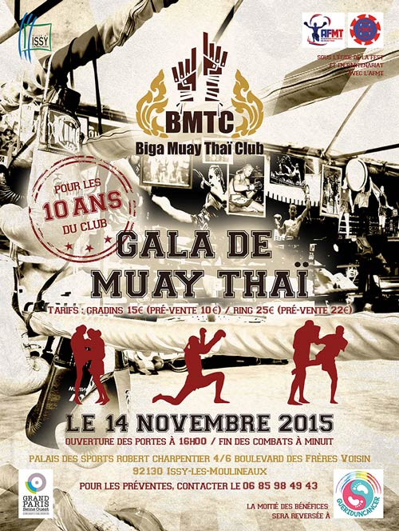
C'est la reprise
Découvrez les premières photos dans Médias puis Photos.
Voici une petite liste de sites où vous pouvez acheter votre matériel :
muaythaifactory.com et muaythaistuff.com (délais de livraison assez longs)
www.boxing-shop.com
www.dragonbleu.fr
www.esprit-fight.fr
www.budo-fight.com
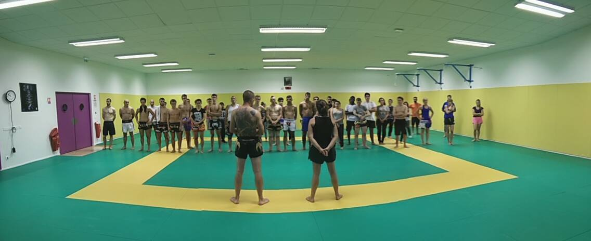
Évènement: Gala des vétérans
Nous y allons, si il y en a qui sont intéressés on peut réserver sur le site de l'AFMT 10 euros gradin et 20 euros ring!
Ça peut faire une première sortie avec le club.
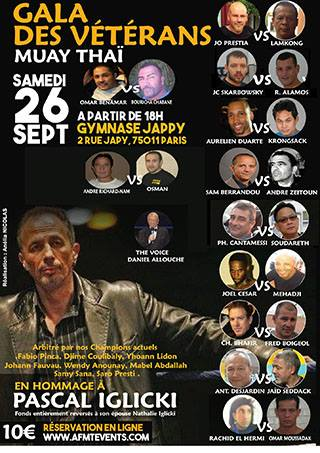
Saison 2015 - 2016
C'est la reprise ! Rendez-vous :
- Mardi 8 septembre à 19h30 pour les adultes
- Mercredi 9 septembre à 17h45 pour les enfants
Il ni a pas de changement concernant les jours et heures d'entrainement.
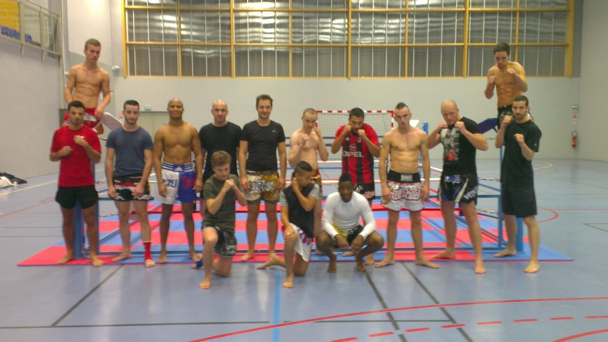
Nouvelle saison 2014 - 2015
Ça y est, l'entraînement a repris avec son nouveau créneau le mercredi pour les adultes et ses nouveaux horaires !
À venir dans notre actualité :
-
C'est les vacances, donc il n'y aura pas cours les mardi 28, mercredi 29 et vendredi 30 octobre 2014.
Notez ça bien dans vos agendas !
Le ring est arrivé et sera donc disponible lors des entraînements du mercredi soir !!!
-
Prochainement, le 15 novembre, nous allons voir le TOP KING WORLD SERIES qui se déroulera à montigny le bretonneux. Une opportunité rare et unique de voir certains des plus grands combattants de muay thai au monde en action et en live sous nos yeux !!! Cliquez sur l'image ci-dessous pour en savoir plus sur cet évènement.
-
Le 22 novembre, il y aura une coupe de france de muay thaï en classe C. C'est la première compétition proposée par la nouvelle fédération, l'Académie Française du Muay Thaï, qui devrait redonner de la notoriété au muay thaï français qui avait perdu de sa superbe ces dernières années.
Certains de nos Naks muay s'y présenteront, et seront ravis de se faire encourager par des sparring partners motivés ! Venez donc nombreux !
Reprise de l'entraînement
LES COURS REPRENNENT à partir du mardi 24 juin 2014 comme d'habitude !!!
À Mardi pour les courageux !!!
Intempéries & entraînement interclub
Bonjour à tous !
Le dojo reste impraticable cette semaine et aucune solution de rechange n'a été proposée.
Il n'y aura donc pas cours mardi 17 juin et vendredi 20 juin 2014.
Pour rappel, l'assemblée générale aura lieu mercredi 18 juin à 20h, dans la salle attenante au dojo et au vestiaire.
Vous y êtes tous les bienvenus !
Nous vous donnons rendez-vous le jeudi 19 juin à 19h30 devant le gymnase de Port-Marly d'ou nous partirons pour faire un entraînement au stade de MARLY-LE-ROI, afin de finir la préparation de l'interclub de dimanche.
Bonne semaine !
Informations championnat national de BOJI 2014
Céline et Pix vont participer au championnat de France de BOJI.
Ça se passera le Dimanche 1 Juin, au Gymnase Anne Franck, 7 rue Jean Poulmarch, 94290 VILLEUNEUVE LE ROI
Si vous voulez partager ce moment avec nous, venez à partir de 10h-10h30.
À Dimanche !
Résultats Compétition de SANDA 2014
Au terme d'une journée épique, nos deux champions ont conservé leur titre.
Le premier combat de Julien a été remporté par décision au deuxième round.
Sa finale a été gagnée par KO technique après abandon.
Le premier combat de pix a été gagné au deuxième round par KO technique, après que l'entraîneur ait jetté l'éponge.
Sa finale a été remportée aux points au deuxième round.
Merci aux courageux qui ont fait le déplacement, et évidemment au coach pour sa préparation.
N'hésitez pas à aller voir les photos et vidéos dans la rubrique médias.
Informations Compétition de SANDA 2014
Julien et Pix remettent leur titre en jeu au championnat d'Île-de-france de SANDA.
Ça se passera le Dimanche 2 Mars, au Complexe Sportif Léo Lagrange, 68 Boulevard Poniatowski, 75012 Paris.
Venez à partir de 10h pour découvrir la compétition si ce n'est pas déjà fait, et supporter vos sparring partners !
À Dimanche pour les courageux !
Bonjour à tous
Ca y est, l'association MANTIS BOXING vient d'ouvrir ses portes.
Les cours ont commencé le 17 septembre 2013 au nouveau complexe sportif de Port-Marly, dans la salle du dojo.
Bienvenue sur notre site où vous trouverez des infos sur nos cours, les actus, l'équipe enseignante, les photos et vidéos !
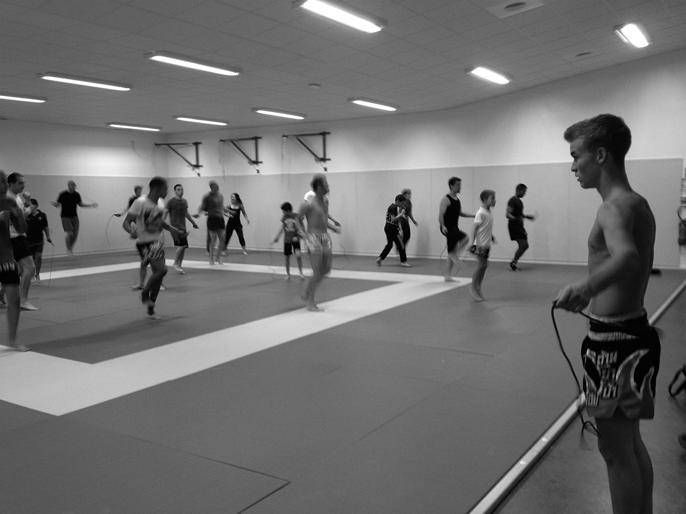